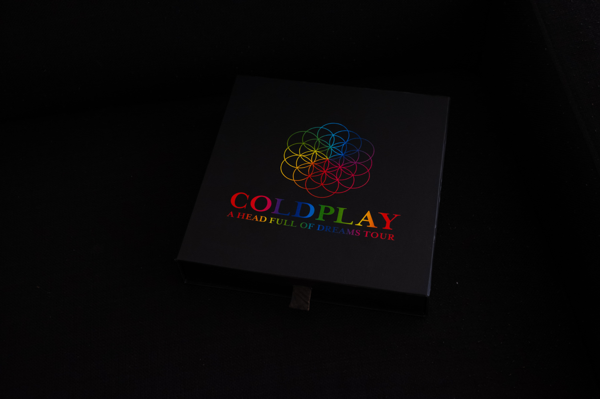

Bio
Coldplay is an English rock band formed in London in 1996. The band's members are vocalist/pianist Chris Martin, guitarist Jonny Buckland, bass player Guy Berryman and drummer Will Champion. Coldplay became famous around the world with their 2000 song "Yellow". Their first album, Parachutes, was very successful and was nominated for the Mercury Prize. Coldplay were nominated for this award again in 2003 and 2005. Coldplay is one of the most successful bands of the 21st century, selling over 90 million records worldwide. The band is also known for hit singles, including "Speed of Sound" and the 2 Grammy Award-winning songs, "Clocks" and their 2008 single "Viva la Vida" (Song of the Year for 2008).
Band Members
- Chris Martin
- Jonny Buckland
- Guy Berryman
- Will Champion
Discography
Here is a list of Coldplay's albums
- Saftey - 1998
- The Blue Room - 1999
- Parachutes - 200
- A Rush of Blood to the Head - 2002
- X&Y - 2005
- Viva la Vida or Death and All His Frieds - 2008
- Prospekt's March - 2008
- Mylo Xyloto - 2011
- Ghost Stories - 2014
- A Head Full of Dreams - 2015
- Everyday Life - 2019
- Music of the Spheres - 2021
Tour
Coldplay is currently on a world tour promoting Music of the Spheres
Click here for dates